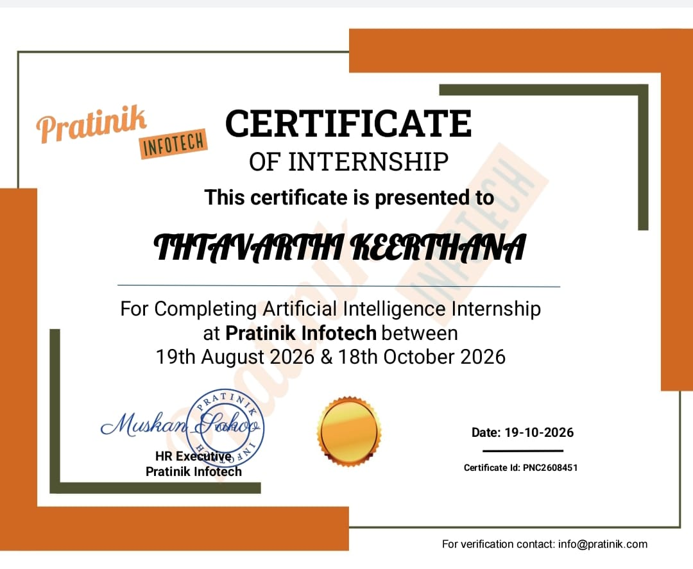

Bachelor of Technology
Computer Science and Engineering
Vel Tech Rangarajan Dr. Sagunthala Institute of Science and Technology, ChennaiCGPA 8.11 / 10COMPUTER SCIENCE ENGINEERING · CLASS OF 2027
Turning technology into real-world solutions.
I'm Keerthana, a software developer in the making with a passion for Java, backend engineering, and AI-powered applications. I build practical solutions that combine thoughtful engineering with real-world problem solving.
I’m Keerthana Thtavarthi, a Computer Science Engineering student at Vel Tech University with a strong interest in software development, backend engineering, and applied artificial intelligence.
I enjoy understanding how applications work behind the scenes—from designing APIs and managing databases to integrating machine learning models into usable software.
Through my projects, I've explored Java, Spring Boot, Node.js, MySQL, Python, React, and local AI model integration. I believe the best way to learn software engineering is to build, test, debug, and continuously improve real applications.
My goal is to grow into a software engineer who can design reliable systems, solve challenging problems, and deliver meaningful technology solutions.
Computer Science and Engineering
Vel Tech Rangarajan Dr. Sagunthala Institute of Science and Technology, ChennaiCGPA 8.11 / 10Sri Nidhi Junior College, Tiruvuru
Mathematics, Physics and ChemistryScore 86.5%Little Angels Public School
GampalagudemPercentage 100%Developing practical applications that address real-world problems.
Working with backend systems, AI integration, databases, and web technologies.
Strengthening problem-solving skills and writing cleaner, more reliable code.
A growing toolkit, applied through projects and continuous practice.
Practical explorations in AI, backend systems, and useful software.
01 FOR each i in nums
02 FOR j after i
03 IF nums[i] + nums[j]
04 equals target
05 RETURN [i, j]
06 RETURN [-1, -1]
public int[] twoSum(int[] nums, int target) { for (int i = 0; i < nums.length; i++) { for (int j = i + 1; j < nums.length; j++) { if (nums[i] + nums[j] == target) return new int[]{i, j}; } } return new int[]{-1, -1}; }
Check each pair once. Return the indices as soon as their values add up to the target.
An Ollama-based framework for pseudocode-to-code generation and program analysis
Turns natural-language programming problems and pseudocode into code in the selected language, then helps learners understand the result with a dedicated analysis stage. Built as a full-stack developer tool with a locally hosted language model.
Getting code is only one part of learning. Understanding execution, complexity, and edge cases can be just as difficult.
React and Axios connect to a Spring Boot REST API. The backend calls local Ollama twice: first to generate code, then to analyze it.
A deep-learning image classification application for identifying common steel surface defects, developed with a ResNet18 model on the NEU-CLS dataset.
An inventory dashboard for products, suppliers, stock levels, and sales—bringing day-to-day stock operations into one place.
Pratnik Infotech
Completed an AI internship from 19 August to 18 October 2026.

I also practice programming problems to strengthen my understanding of algorithms, data structures, and problem-solving techniques.
Explore my education, technical skills, projects, and internship experience in one place.
Updated 7th-semester resume · PDFI'm always interested in connecting with developers, learning from new opportunities, and exploring challenging software projects.